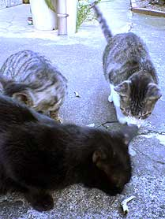

|
■2003/10/11/(Sat)23:29
会社移転
|

会社の引越しでちと忙しいワタクシです。
今日も一日、あっちにこっちにとパタパタ走り回り、パーテーションを設置しようとしていたら、立てかけたパーテションが倒れて足に〜！ぎゃー！
重量級のパーテーションだったので、一瞬真っ青になったものの、そんなに痛くないので、セーフ。。。と思い帰宅。
ズボンを脱ごうとしたら…脱げません。
ぱんぱんに腫れてます。
どーにかこーにか脱いで、まったりお風呂。と、出たらポカポカ温まって血行良くなったワタクシの足はただいまグアングアン疼いてます。
良く見るとくるぶしのあたりの皮がべろりん。
足を伸ばすと腫れてるがゆえに皮膚が引っ張られて伸ばしきれません。
明日どーなってるかちら？
|
| |